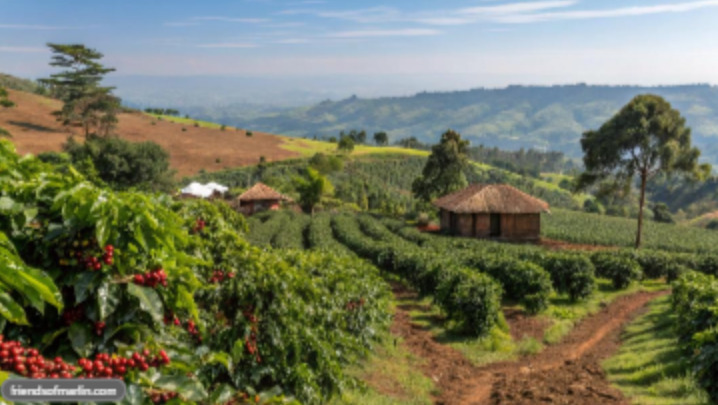

About Our Plantation
Green Hills Coffee Plantation grows quality coffee using careful farming practices. Visitors can learn about coffee cultivation, harvesting and processing.
Learn About Coffee Contact the Plantation
Coffee Varieties
- Arabica
- Robusta
- Batian
- Ruiru 11
Coffee Production Process
- Planting coffee seedlings
- Maintaining and pruning coffee bushes
- Harvesting ripe coffee cherries
- Drying and processing the beans
- Packaging the processed coffee
Plantation Activities
- Pruning
- Removing selected branches to improve plant growth and productivity.
- Harvesting
- Picking ripe coffee cherries from the coffee bushes.
- Drying
- Reducing moisture in processed coffee beans before storage.